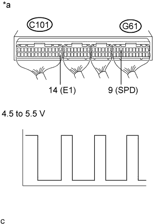

DTC 42 Vehicle Speed Sensor Signal Circuit Malfunction |
| DTC No. | DTC Detection Condition | Trouble Area |
| 42 | All conditions below are detected continuously for 8 sec. or more:
|
|
| 1.CHECK SPEEDOMETER (OPERATION) |
Drive the vehicle and check if the operation of the speedometer in the combination meter assembly is normal.
|
| ||||
| OK | |
| 2.CHECK ECM (SP1 VOLTAGE) |
|  |
Move the shift lever to N.
Jack up the vehicle.
Turn the ignition switch to ON.
Check the waveform between the specified terminals of the ECM connectors as the rear wheels are turned slowly.
| Tester Connection | Switch Condition | Specified Condition |
| G61-9 (SPD) - C101-14 (E1) | Ignition switch ON | Correct waveform is as shown |
| *a | Component with harness connected (ECM) |
|
| ||||
| OK | ||
| ||
| 3.CHECK HARNESS AND CONNECTOR (COMBINATION METER ASSEMBLY - ECM) |
Disconnect the ECM connector.
Disconnect the combination meter assembly connector.
Measure the resistance according to the value(s) in the table below.
| Tester Connection | Condition | Specified Condition |
| G61-9 (SPD) - G6-32 | Always | Below 1 Ω |
| Tester Connection | Condition | Specified Condition |
| G61-9 (SPD) or G6-32 - Body ground | Always | 10 kΩ or higher |
Reconnect the ECM connector.
Reconnect the combination meter assembly connector.
|
| ||||
| OK | ||
| ||